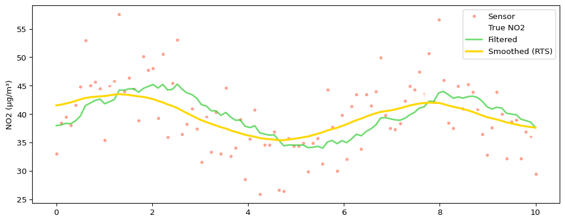
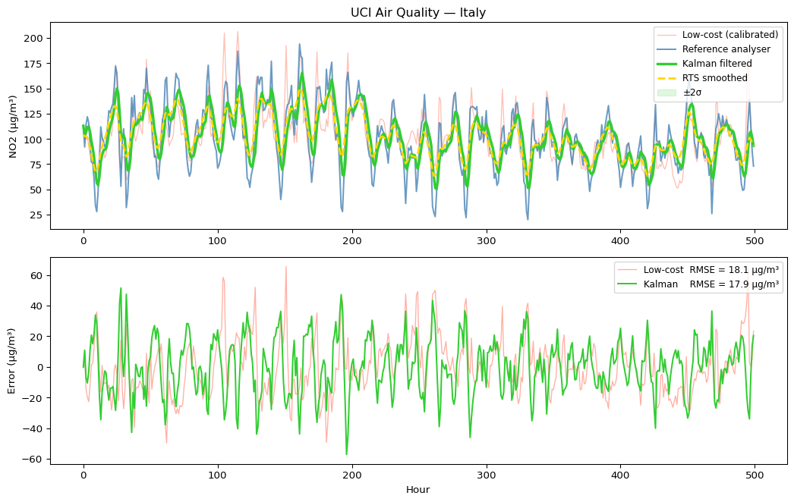

x_pred = A * xP_pred = A * P * A + QK = P_pred / (P_pred + R)x = x_pred + K * (z - x_pred)P = (1- K) * P_pred
👉 One equation, one line — that’s it
Vanilla Python Implementation
x =40.0# initial guess (NO2 in μg/m³)P =10.0# initial uncertaintyA =1# NO2 changes slowlyH =1# we observe NO2 directlyQ =0.3# process noiseR =25.0# sensor noise variance (std ≈ 5 μg/m³)estimates = []for z in meas:# Predict x_pred = A * x P_pred = A * P * A + Q# Update K = P_pred / (P_pred + H * H * R) # Kalman gain x = x_pred + K * (z - H * x_pred) P = (1- K * H) * P_pred estimates.append(x)estimates = np.array(estimates)
# Forward pass — same Kalman filter, but we save everythingxs, Ps, x_preds, P_preds = [], [], [], []x, P =40.0, 10.0for z in meas: x_pred = A * x; P_pred = A * P * A + Q K = P_pred / (P_pred + H * H * R) x = x_pred + K * (z - H * x_pred); P = (1- K * H) * P_pred xs.append(x); Ps.append(P) x_preds.append(x_pred); P_preds.append(P_pred)# Backward pass (RTS) — refine using future informationsmoothed = np.array(xs).copy()for k inrange(len(smoothed) -2, -1, -1): C = Ps[k] * A / P_preds[k+1] smoothed[k] = xs[k] + C * (smoothed[k+1] - x_preds[k+1])xs, Ps = np.array(xs), np.array(Ps)x_preds, P_preds = np.array(x_preds), np.array(P_preds)
Result: Smoothing

Filtering vs Smoothing
Filter
RTS Smoother
Data used
past + present
full series
Use case
real-time
offline reanalysis
Accuracy
good
better
👉 Same model — just more information
State Space Models — The Bigger Picture
The Kalman filter is a state space model.
A state space model has two parts:
\[x_k = A \, x_{k-1} + w_k \quad \text{(transition — how state evolves)}\]\[z_k = H \, x_k + v_k \quad \text{(observation — what sensors see)}\]
Here’s the connection:
ARIMA can be rewritten as a state space model — statsmodels does this internally
Kalman filter = inference in a linear Gaussian state space model
RTS smoother = full posterior over the state given all observations
👉 State space is the framework — Kalman is the efficient algorithm to solve it
What About ARIMA / Prophet?
ARIMA / Prophet
Kalman Filter
Primary goal
Forecasting
State estimation
Multiple sensors
No
Yes — built in
Uncertainty
Confidence intervals
Propagated at every step
Real-time updates
Refit needed
Natural — just run the loop
Physics/domain model
No
Yes — you define A, Q
👉 ARIMA asks “what comes next?”
👉 Kalman asks “what is true right now, given noisy observations?”
For sensor fusion — Kalman is the right tool
Libraries
pykalman
filterpy
statsmodels
👉 These implement filtering and smoothing
But: building it once makes it much clearer
Fun Fact 🚀
The Apollo Guidance Computer used a Kalman filter.
👉 You can read the original code on GitHub.
~2 MHz processor
~4 KB RAM
Still doing state estimation
If it worked there, it’ll work for our NO2 sensors.
Why Build It Yourself?
Understand the mechanics
Debug and trust results
Extend when needed
Not everything is exposed in libraries
Let’s Try It on Real Data
So far — simulated signals.
UCI Air Quality dataset — collected in an Italian city
Hourly NO2 readings over one year
One low-cost metal oxide sensor alongside a reference analyser
Exactly the setup we have in the lab
Two things to do before fusing:
Handle missing values (-200 sentinel in this dataset)
Calibrate the sensor — it returns raw resistance, not μg/m³
Real Data — UCI Air Quality, Italy
Low-cost metal oxide sensor + reference analyser, hourly NO2 readings.
Fusing Real Data
x, P, A =float(df["no2_ref"].iloc[0]), 20.0, 1R_ref, R_sensor, Q =4.0, 50.0, 0.5xs, Ps, x_preds, P_preds = [], [], [], []for z_ref, z_lc inzip(df["no2_ref"], sensor_cal): x_pred = A * x; P_pred = A * P * A + Q K = P_pred / (P_pred + R_ref) x = x_pred + K * (z_ref - x_pred); P = (1- K) * P_pred K = P / (P + R_sensor) x = x + K * (z_lc - x); P = (1- K) * P xs.append(x); Ps.append(P); x_preds.append(x_pred); P_preds.append(P_pred)xs, Ps, x_preds, P_preds =map(np.array, [xs, Ps, x_preds, P_preds])smoothed_real = xs.copy()for k inrange(len(xs) -2, -1, -1): C = Ps[k] * A / P_preds[k+1] smoothed_real[k] = xs[k] + C * (smoothed_real[k+1] - x_preds[k+1])
Result: Real Fusion

Back to Our Lab
We run the same approach with our own sensors:
Multiple low-cost NO2 sensors — high density, noisy
A few regulatory analysers — sparse, very accurate
The filter fuses them: cheap sensors benefit from reference accuracy without being overwritten.
Takeaways
Kalman filter = predict + correct
RTS smoother = refine using future data
Simple ideas → powerful results
Build it once from scratch — you’ll trust it much more